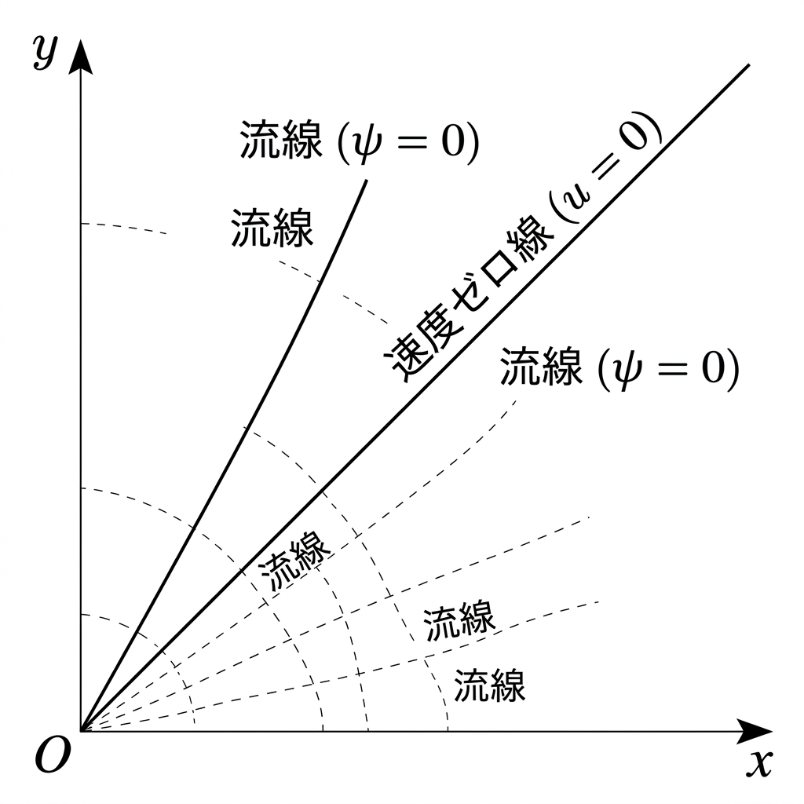
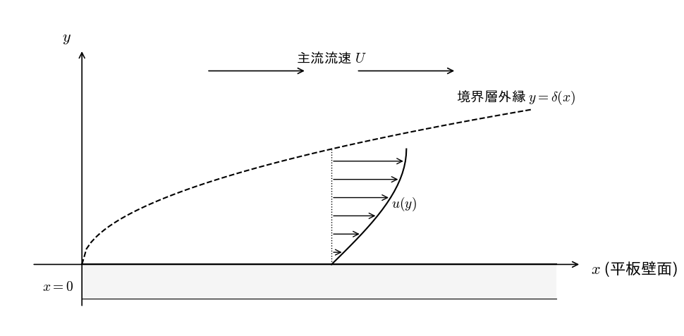
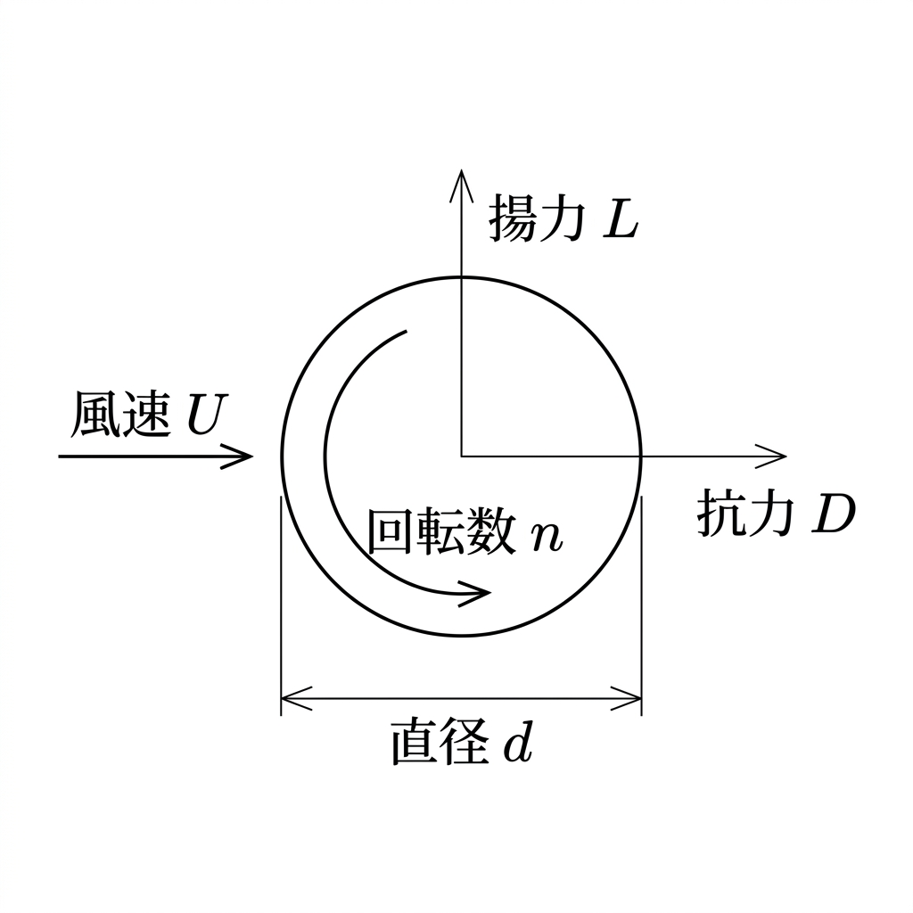

実施日: 2022年7月22日
制限時間: 90分
満点: 78点
注意事項:
- すべての解答は計算過程を含めて詳細に記述すること。
- 必要に応じて図を描いて説明すること。
- 物理変数の定義や前提条件をよく確認した上で解答すること。
第1問 (34点)
2次元非圧縮性・渦なし流れにおいて、速度ポテンシャル $\phi(x, y)$ が次の式で与えられている。 $$\phi(x, y) = ax^3 + bxy^2 + cx^2$$ ここで、$x, y$ は直交座標を表し、$a, b, c$ は実数の定数である。また、流速の $x$ 方向成分を $u(x, y)$、$y$ 方向成分を $v(x, y)$ とし、これらは速度ポテンシャル $\phi$ を用いて次のように定義されるものとする。 $$u = \frac{\partial \phi}{\partial x}, \quad v = \frac{\partial \phi}{\partial y}$$

図1：2次元速度ポテンシャル流れの様子
以下の問いに答えよ。
(a) 流速成分 $u$ および $v$ をそれぞれ $x, y$ および定数 $a, b, c$ を用いて表せ。また、得られた $u$ および $v$ の式に、定数 $a, b, c$ のうちどれがそれぞれ含まれるかを明記せよ。(12点)
(b) 流れの関数 $\psi(x, y)$ が存在し、流速成分 $u, v$ との間で以下の関係式 $$u = \frac{\partial \psi}{\partial y}, \quad v = -\frac{\partial \psi}{\partial x}$$ が成り立つための定数 $a, b, c$ に関する整合条件（満たすべき関係式）を求めよ。また、その条件のもとでの流れの関数 $\psi(x, y)$ を求めよ。ただし、積分定数は $C$ を用いよ。(12点)
(c) (b) の整合条件が満たされ、かつ原点 $(0, 0)$ での流速がゼロ（$u(0,0) = 0$ かつ $v(0,0) = 0$）であり、さらに定数 $c$ は $c = 0$ であるとする。このとき、流速成分 $u$ および $v$ を定数 $a$ と座標 $x, y$ を用いて表せ。また、流速 $u$ がゼロとなる点 $(X, Y)$ が円 $X^2 + Y^2 = 2$ の上にあるとき、第1象限（$X > 0, Y > 0$）における交点 $(X, Y)$ の座標を求めよ。(4点)
(d) (b) の流れの関数 $\psi(x, y)$ について、原点での値をゼロ（$\psi(0, 0) = 0$）とし、さらに定数 $c$ は $c = 0$ であるとする。このとき、流れの関数 $\psi(x, y)$ を定数 $a$ と座標 $x, y$ を用いて表せ。また、第1象限（$x > 0, y > 0$）において、流線 $\psi = 0$ を表す半直線が $y = \sqrt{E}x + D$ の形で表されるとき、定数 $D$ および $E$ の値をそれぞれ求めよ。(6点)
第1問の解答形式: - (a): $u$ および $v$ の数式を明記し、それぞれの式に含まれる定数を箇条書きで示すこと。 - (b): 整合条件を示す関係式と、流れの関数 $\psi(x, y)$ の数式を明記すること。 - (c): $u, v$ の数式と、交点座標 $(X, Y)$ を $(X, Y) = (\text{数値}, \text{数値})$ の形式で示すこと。 - (d): $\psi(x, y)$ の数式と、定数 $D$, $E$ の数値を明記すること。
第2問 (34点)
一様な主流速度 $U$ の中に置かれた平板上の層流境界層を考える。平板の前縁からの距離を $x$、壁面（平板表面）からの垂直距離を $y$、境界層厚さを $\delta(x)$ とする。境界層内の流速の $x$ 方向成分 $u(x, y)$ の速度分布が、次の2次放物線で近似できるものとする。 $$\frac{u}{U} = 2\left(\frac{y}{\delta}\right) - \left(\frac{y}{\delta}\right)^2$$

図2：平板上の二次元定常層流境界層における速度分布
以下の問いに答えよ。
(a) 壁面（$y = 0$）におけるせん断応力 $\tau_w$ は、流体の粘度を $\mu$ とすると $\tau_w = \mu \left. \frac{\partial u}{\partial y} \right|_{y=0}$ で定義される。この定義に基づいて $\tau_w$ を計算し、$\mu$, $U$, $\delta$ を用いて表せ。また、$\tau_w$ が流体の密度 $\rho$、粘度 $\mu$、主流速度 $U$、境界層厚さ $\delta$ を用いて $$\tau_w = A \rho^B \mu^C U^D \delta^E$$ と表されるとき、定数 $A, B, C, D, E$ の値をそれぞれ求めよ。(15点)
(b) 運動量厚さ $\theta$ は次式で定義される。 $$\theta = \int_0^\delta \frac{u}{U}\left(1 - \frac{u}{U}\right) dy$$ この定義式に速度分布の近似式を代入して積分を実行し、$\theta$ を $\delta$ の関数として求めよ。また、得られた結果が $$\theta = \frac{H \times 10 + I}{F \times 10 + G} \delta$$ の形で表されるとき、各パラメータ $F, G, H, I$（いずれも $0$ から $9$ までの1桁の整数）の値をそれぞれ求めよ。(12点)
(c) 圧力勾配がない場合の平板上の境界層に関するカルマンの運動量積分方程式は次式で与えられる。 $$\frac{d\theta}{dx} = \frac{\tau_w}{\rho U^2}$$ (a) および (b) で得られた結果をこの方程式に代入し、境界条件（$x = 0$ で $\delta = 0$）のもとで、境界層厚さ $\delta$ を $x$, $\rho$, $\mu$, $U$ の関数として求めよ。また、比 $\frac{\delta^2}{x^2}$ が、前縁からの距離 $x$ に基づくレイノルズ数 $Re_x = \frac{\rho U x}{\mu}$ を用いて $$\frac{\delta^2}{x^2} = (J \times 10 + K) Re_x^{-1}$$ と表されるとき、パラメータ $J, K$（いずれも $0$ から $9$ までの1桁の整数）の値を求めよ。(4点)
(d) 境界層厚さ $\delta$ と主流速度 $U$ に基づくレイノルズ数 $Re_\delta$ を $Re_\delta = \frac{\rho U \delta}{\mu}$ と定義する。この $Re_\delta$ を、前縁からの距離 $x$ と境界層厚さ $\delta$ のみを用いて表せ。また、層流から乱流への遷移が起こる臨界レイノルズ数が $Re_{\delta, c} = 3.0 \times 10^3$ であるとき、臨界点における比 $\frac{\delta_c}{x_c}$ は $$\frac{\delta_c}{x_c} = L.M \times 10^{-N}$$ と表される。ここで、$\delta_c$ は臨界点における境界層厚さ、$x_c$ は臨界点における平板前縁からの距離である。定数 $L, M, N$（いずれも $0$ から $9$ までの1桁の整数）の値を求めよ。(3点)
第2問の解答形式と指示: - 数値入力（マーク形式）について、以下の指示に従って解答すること。 - (a): $\tau_w$ の導出過程および最終式を記述し、定数 $A, B, C, D, E$ の値をそれぞれ明記すること。 - (b): 積分計算の過程を記述し、$\theta$ の式を明記した上で、1桁の整数 $F, G, H, I$ の値をそれぞれ明記すること。 - 解答例: $\theta = \frac{2}{15}\delta$ の場合、$\theta = \frac{0 \times 10 + 2}{1 \times 10 + 5}\delta$ となるため、$F=1, G=5, H=0, I=2$ と答えること。 - (c): $\delta$ の導出過程を記述し、$\delta$ の式を明記した上で、1桁の整数 $J, K$ の値をそれぞれ明記すること。 - 解答例: $\frac{\delta^2}{x^2} = 30 Re_x^{-1}$ の場合、$\frac{\delta^2}{x^2} = (3 \times 10 + 0) Re_x^{-1}$ となるため、$J=3, K=0$ と答えること。 - (d): $Re_\delta$ を $x, \delta$ で表す式を記述し、比 $\frac{\delta_c}{x_c}$ の計算過程を示した上で、1桁の整数 $L, M, N$ の値をそれぞれ明記すること。 - 解答例: $\frac{\delta_c}{x_c} = 1.0 \times 10^{-2}$ の場合、$L=1, M=0, N=2$ と答えること。
第3問 (10点)
直径 $d$、長さ（高さ） $H$ の2本の円柱（ローター）を備えたローター船が、風速 $U$ の風を受けて海上を一定の速度 $V$ で巡航している。各ローターは回転数 $n$（角速度 $\omega = 2\pi n$）で回転している。

図3：風を受けるローター（回転円柱）に働く流体力学的な力
(a) 船が真東に進むための推力（揚力）を最大にしたい。ローターが反時計回り（上から見て）に回転しているとき、東向きの推力を最大にするためには、風向（風が吹いてくる方向）は「東、西、南、北」のいずれが良いか。クッタ・ジューコフスキーの定理およびマグヌス効果（円柱周りの循環 $\Gamma = 2\pi R^2 \omega$、ここで $R = d/2$ はローターの半径）の物理的・力学的理由を含めて説明せよ。なお、円柱単位長さあたりの揚力 $L$ は、空気の密度を $\rho$、循環を $\Gamma$、風速を $U$ とすると、$L = -\rho U \Gamma$ として与えられるものとする。 (6点)
(b) 船が巡航することに伴う船が受ける相対的な風向きの変化は、マグナス効果による東向きの推力には影響を与えないものとする。また、船が受ける全抗力 $D$ は、2本のローターによって発生する全推力と釣り合っている。このとき、ローター船の必要回転数 $n$ を求める式は、 $$n = A \pi^I D^J \rho^K U^L V^M d^N H^O$$ と表される。クッタ・ジューコフスキーの定理からこの式を導出し、べき定数 $A, I, J, K, L, M, N, O$ を求めよ。ただし、$\rho$ は空気の密度である。 (4点)
第3問の解答形式と指示: - (a): 推力を最大にする風向（「東、西、南、北」のいずれか）を明記し、マグヌス効果とクッタ・ジューコフスキーの定理に基づく物理的・力学的理由を詳細に説明すること。 - (b): 必要回転数 $n$ の導出過程を詳細に記述し、べき定数 $A, I, J, K, L, M, N, O$ の値をそれぞれ明記すること（小数は分数表記、または有限小数のまま記述してよい）。